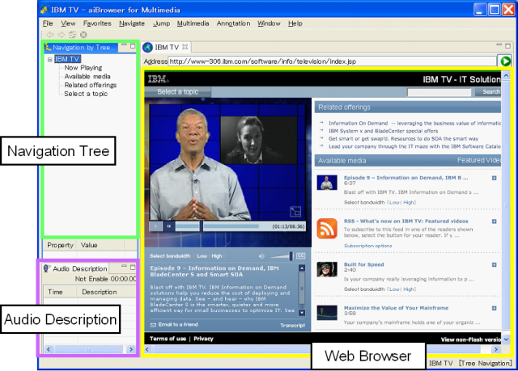

最近のウェブ環境では、直感的かつ視覚的効果の高い表現が急速に多様化しています。 マルチメディア・コンテンツはその代表的な例です。 しかしながら、スクリーンリーダ利用者にとって、こうしたマルチメディア・コンテンツにアクセスすることはとても難しいというのが現実です。
aiBrowser は、動的に変化するコンテンツを含むマルチメディア・コンテンツが、画像を見たりマウスを操作することのできないスクリーンリーダ利用者にとって、いかにアクセシブルに作られているかを評価する研究から生まれました。
このセクションでは、最初に aiBrowser の基本機能を紹介したあと、マルチメディア・コンテンツにアクセスするための aiBrowserの 3 つの特徴を説明します。
aiBrowser の基本操作は、スクリーンリーダと同様の操作で行うことができます。また、読み上げに関する基本的な機能もスクリーンリーダと同様です。
その他の操作に関しては、基本ショートカットキー および 全ショートカットキー の項目を参照してください。
注意: aiBrowser は、実験の第 1 段階のプログラムであり、「全ショートカットキー」に記載されている機能がすべてです。 文字、単語、段落単位の読み上げや、クリップボードの読み上げといったスクリーンリーダ基本機能のいくつかは現時点ではサポートしていません。
ページを開くと自動的に音楽が鳴り出すマルチメディア・コンテンツがよくありますが、通常のスクリーンリーダでは、音楽と読み上げ音声の音量を別々に制御することができません。
aiBrowser はこのような時に、オーディオ制御用のショートカットキーを使用して、マルチメディア・コンテンツの音量を、読み上げ音声とは別に制御することができます。 マルチメディア・コンテンツの音量を下げたい時は、「Ctrl + J」 キー、上げたいときは、「Ctrl + K」 キーを押します。 さらに、「Ctrl + S」 キーで再生を中止、「Ctrl + P」 キーで再開、Pause キーで一時停止、「Ctrl + M」 キーで音を消す、といった細かい制御が可能です。
注意: すべてのマルチメディア・コンテンツでこうした機能が使えるわけではありません。制限事項については、よくある質問 の項目を参照してください。
マルチメディア・コンテンツは、通常、視覚的効果を重視して作られており、読み上げられるテキスト情報が少ないということがよくあります。 また、見出しのような構造化情報が少ないため、マルチメディア・コンテンツを非視覚的に操作することはほとんど不可能だと思われてきました。
aiBrowserは、この問題を解決するための新たな試みとして、ユーザが代替テキストや見出しを追加できる機能 (注釈機能) を導入しました。 ユーザ自身あるいはボランティアが、代替テキストや見出しを注釈として追加することで、非視覚的にマルチメディア・コンテンツを操作できるようにする技術です。 注釈が追加されていれば、ウェブコンテンツが制作者によってアクセシブルに修正されることを待たずに操作することが可能になります。
代替テキストの無い画像や、テキストラベルのない Flash オブジェクトに、注釈として代替テキストを追加することができます。
「A」 キーを押すと、代替テキスト注釈を追加できる項目へジャンプします。ここで 「Ctrl + A」 キーを押すと、代替テキストを入力するためのダイアログボックスが開きます。 テキストを入力して Enter キーを押すと登録することができます。 一度代替テキストが追加されたページは、その後、何度 aiBrowser で開いても同様にその代替テキストを利用することができます。
代替テキスト注釈が追加されている場所で、再度 「Ctrl + A」 キーを押すと、代替テキストを削除/変更することができます。ページ内に注釈として追加されているすべての代替テキストと見出しを削除したい場合は、「Ctrl + Alt + R」 キーを押します。
注意: 代替テキスト注釈が追加されているページで、それらがが利用できない場合は、「F4」 キーを押してコンテンツの再解析を実行してください。 Flash ページのロード完了を正しく検出できなかった場合に、このような手動操作を行う必要があります。
見出し、またはしおりとして利用できる見出し情報を、注釈として追加することができます。aiBrowser には見出しへジャンプする機能がありますので、見出し情報を追加することで、ページ内をより効率的に移動することができるようになります。
見出し注釈を追加したい場所で 「Ctrl + H」 キーを押すと、その場所に見出しが追加されます。 一度見出しが追加されたページは、その後、何度 aiBrowser で開いても同様にその見出しを利用することができます。
見出し注釈が追加された場所で、再度 「Ctrl + H」 キーを押すと、見出し注釈を削除することができます。 ページ内に注釈として追加されているすべての見出しと代替テキストを削除したい場合は、「Ctrl + Alt + R」 キーを押します。
注意: 見出し注釈が追加されているページで、それらがが利用できない場合は、「F4」 キーを押してコンテンツの再解析を実行してください。 Flash ページのロード完了を正しく検出できなかった場合に、このような手動操作を行う必要があります。
Fennec は、Fennec ファイルによってウェブコンテンツを非視覚的にアクセス可能にできる、aiBrowser の先進的な新機能です。 この機能によって、ウェブページを視覚に障害を持つユーザでもアクセス可能な構造に再構成したり、 テキスト情報を追加することで音声読み上げをより理解しやすいものにすることができます。
視覚的効果を上げるために、背景色や、フォントサイズ、画像、アニメーションなどによって、ページが分割されているコンテンツが多くあります。 しかし、このような視覚情報は非視覚的にはまったく伝達されないため、読み上げ時には情報が欠落してしまいます。 Fennec の仕組みでは、ウェブページの視覚的な情報を外部から動的に追加することができます。 Fennec は XML ベースのメタデータであり、HTML や DHTML、Flash コンテンツなどのウェブコンテンツに適用することができます。
aiBrowser の 「お気に入り」 メニューには、既に Fennec ファイルが用意されたウェブページがいくつか入っています。 「Alt + A」 キーを押すとお気に入りメニューが表示されます。 Fennec ファイルが用意されているページは、そうでないページと比較して、非視覚的なブラウジングが劇的に良くなります。 それは、見出し情報が適切に付けられていて、読み上げられる文字列もより意味のあるものだからです。 そのため、「H」 キーもしくは 「Shift + H」 キーを数回押すことで、ページの概要を知ることができます。
なお、現在のバージョンでは、Fennec ファイルの編集はサポートされていませんが、将来的には機能が追加される予定です。
注意: aiBrowser のお気に入りメニューに入っているページの Fennec ファイルは、alphaWorks にリリースされた時点のものです（2007年 9月 27日）。 そのため、リリース以降に該当ページの更新があった場合には、Fennec ファイルが適切に働かない可能性があります。
ここでは、YouTube の動画を楽しむための手順をご紹介します。
動画のコントロール:
他の動画を検索する: